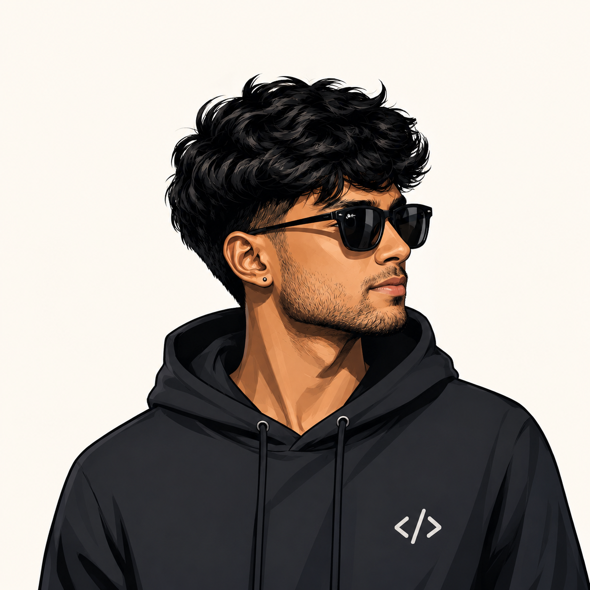
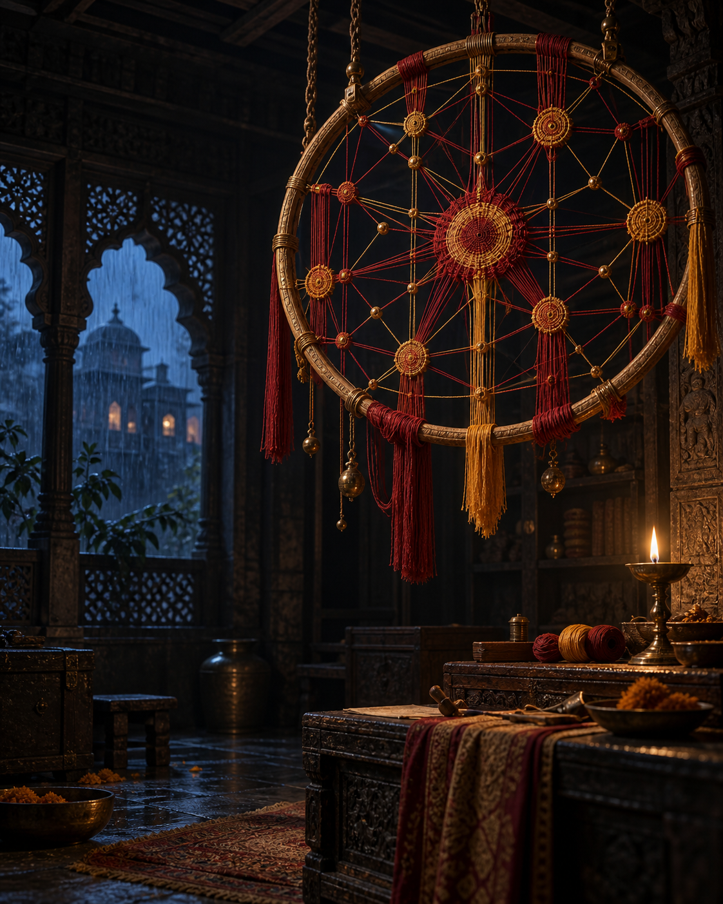

Product surfaces
Thoughtful frontends, interaction design, and the product judgement to make a tool legible at first touch.
An atelier for digital systems · 2026
I make tools, interfaces, simulations, and visual systems that turn complex logic into something people can feel.
A developer with range, not a pile of buzzwords.
I work from the system outward: clarify the real constraint, make the interface obvious, then give the details enough care that the whole thing holds up in use.
Thoughtful frontends, interaction design, and the product judgement to make a tool legible at first touch.
React, TypeScript, APIs, data flows, and the architecture that keeps an experience trustworthy.
Metadata-heavy dashboards and enterprise workflows shaped around real investigation.
Simulations and canvas experiments used to explore emergence, learning, motion, and feedback.

Projects selected from the archive

A good brief is a good beginning.
If you’re working on a product, a platform, or an idea that needs both engineering care and a clear point of view, I’d like to hear about it.